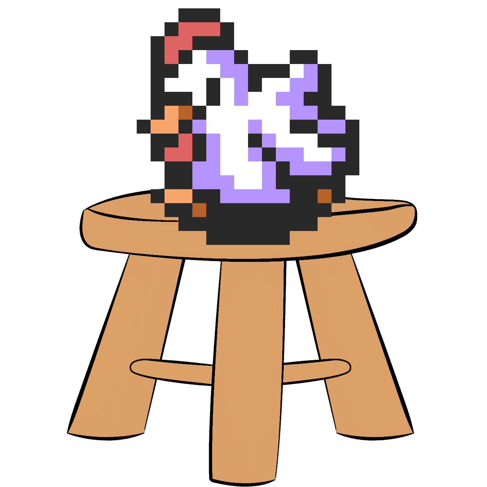

01 / Latest

Racetime.gg archive
ALTTPR Step Ladder
Stats don't lie.
Data snapshot
Loading
View category
Visitors
View site stats
Finished races
--
Identified racers
--
Most popular hour
--
Least popular hour
--
Coverage
--
02 / Racers
Racer leaderboard
Who wins the most
Finish times
Median Gold median
View mode summary
Filter racers
Loading racer statistics...
03 / Records
Hall of records
Fastest, closest, longest
Loading race statistics...
04 / Schedule
Best times to start a race
Compared with similar races
Positive lift means races in that window drew more entries than their matching mode-period baseline. Rankings are observational leads, not causal forecasts.
Minimum ranking sample: 20 racesOpportunity map
Above baseline Below baseline Limited evidence Top-ranked window
05 / Community
Who keeps coming back
Racers grouped by how often they race
Node area represents the share of identified racers. Connector weight and the annotation beneath each node show the share of identified entries they contributed.
Finished archived races onlyView cohort values
06 / Participation
Turnout over time
Average racers per race
View period values
07 / Traffic
When races start
Races per hour
View hourly values
08 / Turnout
When races draw a crowd
Average racers per race
View hourly values
09 / Volume
Busiest hours
Total racers · All data
Finished rooms--
Est. cancelled--
Est. cancelled share--
Sensitivity range--
Estimate assumes rooms opened uniformly by hour. The central baseline is the median finished-room count among the six busiest hours (-- rooms/hour); hourly deficits are clamped at zero. The range is sensitivity analysis, not statistical confidence.
View hourly values
10 / Modes
Which modes draw a crowd
Biggest fields first
View mode values
← All racers
Racer
How they match up
Finish times
Podiums in this mode 0 1–2 3–9 10–24 25+ This racer
Median Gold median
View finish times
When they race
H2H above 50% Below 50% Podium rate, darker is higher Fewer than 3 races